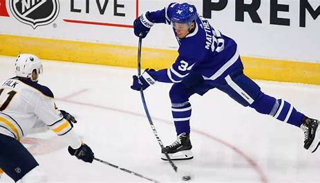
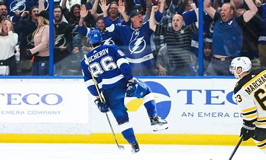

Auston Matthews is the top American born player in the NHL currently. His ability to score at will is what seperates him from others in the league. He always manages to find the back of the net, this is because of his quick release and offensive awareness. Everyone remembers the 2016 first round pick's first game where he tallied four goals, making history. While he's always been an offensive specialist, he's greatly improved the defensive part of his game. Matthews had 107 points last new and more impressively was one goal short of reaching 70. It is clear that Matthews is a threat from anywhere to anyone in the offensive zone.
Matthew's Career David Pastrnak is an offensive superstar and continues to improve every year. In 2023-2024 he posted his second consecutive 100 point season totaling 110 in the regular season. He also had 8 points in the playoffs, coming up very clutch for the Bruins at times. The stats tell you all you need to know about Pastrnak's game, himself and his linemates propel the Bruins to be playoff contenders every season. What makes "Pasta" so unique is he can not only make plays to set up teammates but he cant also create his own chances with his lethal shot.
Pastrnak's CareerNikita Kuckerov once again proved how great of a player his is by putting up the most points in the 2023-2024 season with 144. Kucherov thrives on the powerplay and is always a contender in for the most assists in the league. His playmaking ability is second to none, the combination of deception and hockey sense creates many scoring chances every game for himself and teammates. He has proved that he was the steal of the 2011 draft where he was selected #58th overall.
Kucherov's Career 